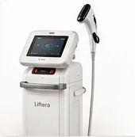
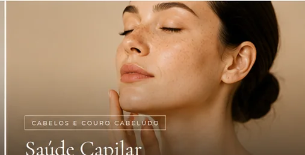
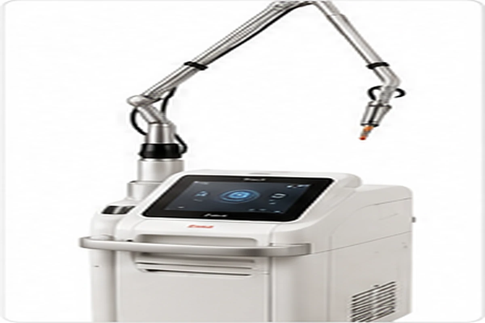
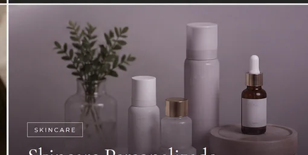
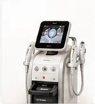
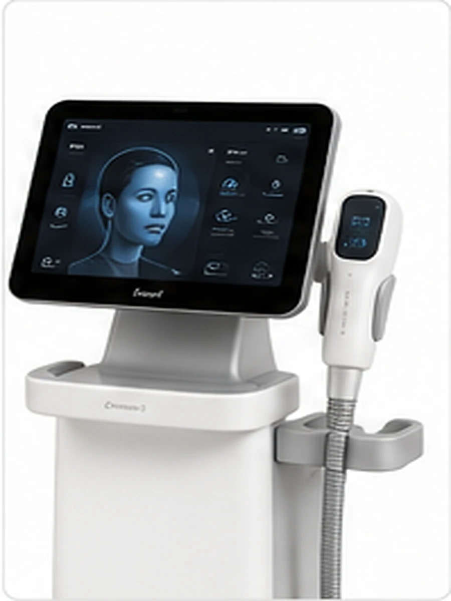

Ultrassom microfocado
Liftera
Tecnologia de ultrassom microfocado que pode ser utilizada em protocolos voltados à firmeza e ao contorno, conforme avaliação e indicação médica.

Pele · Cabelos · Couro Cabeludo · Tecnologia
Médica · CRM-SP 283715 · São Paulo
Atendimento médico particular no Itaim Bibi e em Moema
Avaliação individualizada, cuidado baseado em evidências e plano definido de acordo com as necessidades de cada paciente.
Conheça a médica
Médica com atuação voltada à saúde da pele, cabelos e couro cabeludo, além de cuidados estéticos e tecnologias aplicadas ao atendimento médico.
Atendimento com abordagem individualizada — cada paciente recebe avaliação médica e um plano de cuidados definido de acordo com suas necessidades.
Você se identifica?
A avaliação médica permite compreender cada queixa e definir os cuidados mais adequados de forma individualizada.
"A beleza é uma consequência
do cuidado científico."
— Dra. Ilana Dornelas
Áreas de atuação
Prevenção e tratamento de rugas e linhas de expressão, com protocolo definido individualmente em consulta.

Avaliação de queda de cabelo, afinamento dos fios, alterações do couro cabeludo e outras queixas capilares, com recursos de avaliação conforme indicação médica.
Saiba mais sobre queda de cabelo →
IPL, laser fracionado, radiofrequência, ultrassom microfocado e outros recursos utilizados conforme avaliação médica.
Conheça as tecnologias →Avaliação médica de acne, manchas, rosácea, dermatites, irritações e outras alterações da pele.
Saiba mais sobre avaliação dermatológica →Avaliação de alterações cutâneas e realização de procedimentos médicos quando houver indicação clínica.

Rotina de cuidados definida em consulta médica para o seu tipo de pele.
Recursos disponíveis
A escolha da tecnologia depende da avaliação médica, das características da pele e do objetivo de cada paciente. A indicação e o protocolo são definidos individualmente em consulta.

Tecnologia de ultrassom microfocado que pode ser utilizada em protocolos voltados à firmeza e ao contorno, conforme avaliação e indicação médica.
Plataforma a laser com diferentes possibilidades de uso na pele. A escolha do protocolo depende da indicação clínica e da avaliação individual.
Recurso que associa microagulhamento e radiofrequência, utilizado quando houver indicação médica para objetivos definidos em consulta.
Tecnologia de luz que pode ser indicada para diferentes alterações de pigmentação e vascularização, de acordo com o tipo de pele e a avaliação médica.
Laser utilizado em protocolos selecionados para renovação da pele e outras indicações específicas, sempre após avaliação médica individualizada.

Plataforma utilizada em protocolos definidos conforme indicação médica. Os parâmetros e a finalidade são selecionados de acordo com cada caso.

Recurso complementar de imagem que auxilia na observação de características da pele durante a avaliação. O equipamento ilustrado não representa uma marca específica.
As imagens dos equipamentos são ilustrativas. A indicação de qualquer tecnologia depende de consulta e avaliação médica individualizada.
O que você irá encontrar
Recursos e tecnologias utilizados conforme avaliação e indicação médica.
Consultório moderno e acolhedor, com privacidade e conforto.
Atualização profissional contínua em cursos, congressos e eventos médicos.
Tire suas dúvidas
Nas redes sociais
@drailanadornelas
Locais de atendimento
Quase lá
Preencha os dados e entraremos em contato para confirmar seu horário
* A consulta de avaliação é paga. Após o preenchimento, você será direcionada ao WhatsApp.